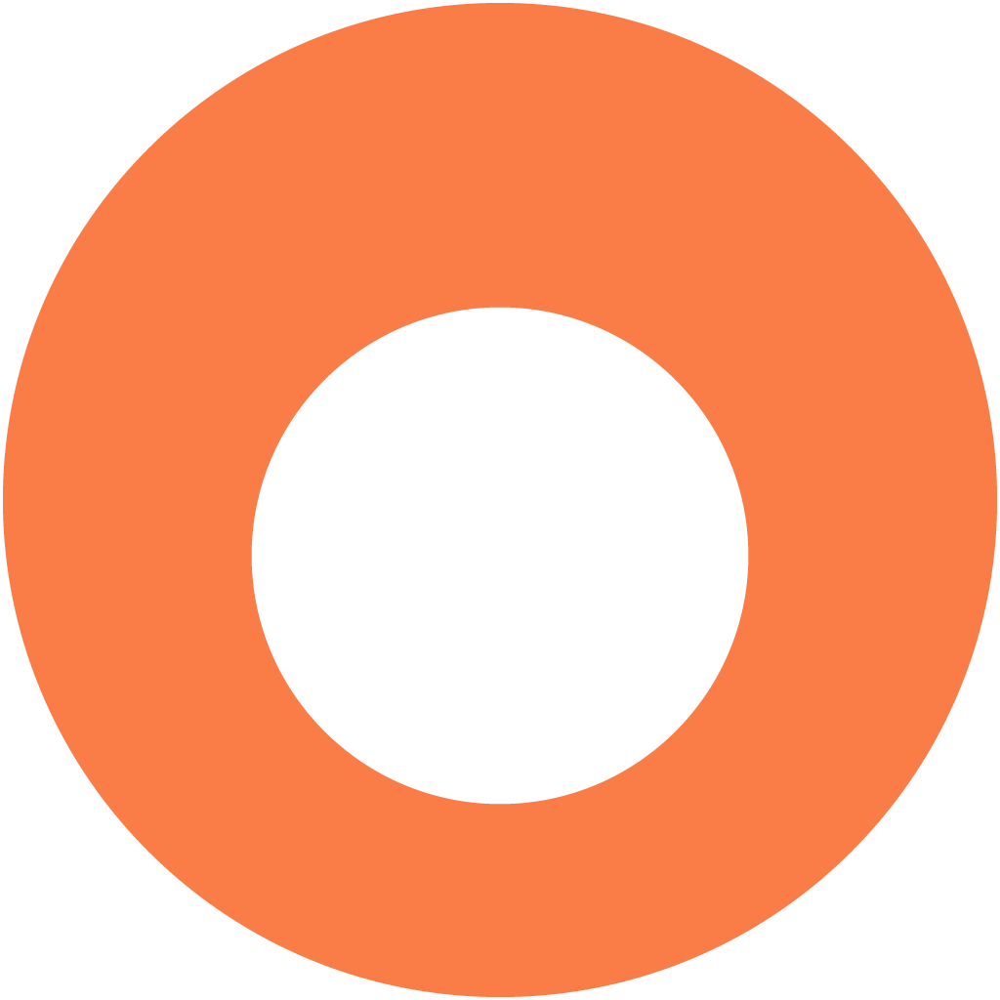

Effective date: January 23, 2026
Application: Circle
Developer: Adam DevOps Solutions
Platform: Available on Google Play and Apple App Store
This Child Safety Standards Policy outlines how Circle, developed by Adam DevOps Solutions, protects children and prevents Child Sexual Abuse and Exploitation (CSAE) on our platform.
Circle and Adam DevOps Solutions maintain a zero-tolerance policy against Child Sexual Abuse and Exploitation (CSAE), including Child Sexual Abuse Material (CSAM).
We are fully committed to protecting children from all forms of sexual abuse and exploitation. Any content, behavior, or activity that exploits, endangers, or sexualizes minors is strictly prohibited and will result in immediate action.
Circle strictly prohibits the following:
Violations result in immediate account termination and reporting to the National Center for Missing & Exploited Children (NCMEC) and relevant law enforcement authorities.
If you encounter any content or behavior that violates our child safety standards, please report it immediately using one of the following methods:
For urgent child safety concerns or if you cannot access the in-app reporting feature, contact us directly at:
Email: info@adam-solutions.io
Please include "CHILD SAFETY REPORT" in the subject line for priority handling.
Response Time: All child safety reports are treated as high priority and are reviewed within 24 hours. Urgent cases involving imminent danger are escalated immediately.
Circle employs multiple layers of content moderation to detect and prevent CSAE:
Our moderation team acts swiftly to remove violating content and take action against offending accounts.
Circle is intended for users aged 18 years and older. We implement the following measures to enforce age restrictions:
Circle and Adam DevOps Solutions comply with:
For child safety concerns, contact:
Email: info@adam-solutions.io
Developer: Adam DevOps Solutions
Application: Circle
We are committed to responding promptly to all child safety inquiries and working collaboratively with parents, guardians, and authorities to ensure the safety of children.
This Child Safety Standards Policy may be updated periodically to reflect changes in our practices or legal requirements. The effective date at the top of this page indicates when the policy was last revised.